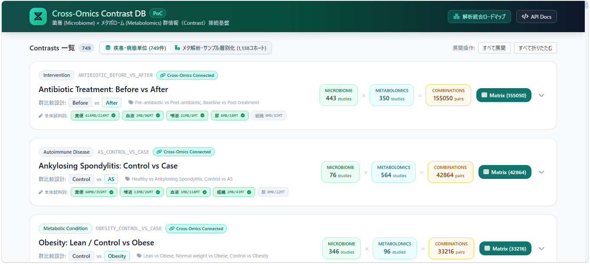
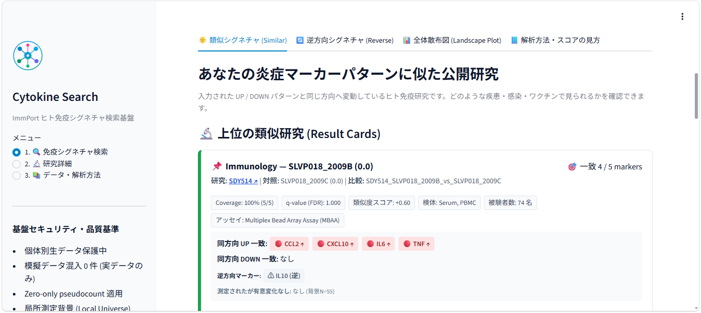

Cross-Omics Contrast DB

腸内細菌叢とメタボロームの公開研究を、比較条件（contrast）という共通単位でつなぐ探索基盤。
疾患、介入、時点、試料などを整理し、「同じ問いを扱う研究」をオミクス横断で発見できるようにします。研究単位ではなく比較単位で接続することで、統合解析候補の探索を現実的にします。
Metabolite Set Database

分散する代謝物セットを、検索・比較・エクスポートできる一つの基盤へ。
KEGG、Reactome、PathBank、WikiPathwaysなど複数の公開資源から5,046セットを整理。名称やIDによる検索に加え、生成AIを利用した意味検索とRパッケージ mseapca への接続を想定しています。
Cytokine Signature Search

UP / DOWNしたサイトカインの組み合わせから、似た免疫応答を示す公開研究を探す。
ImmPortのヒト免疫研究を比較可能なシグネチャへ変換。同方向・逆方向の一致、測定背景、研究情報を一画面で確認し、疾患・感染・ワクチン研究との接点を探索できます。
MetaboLoadings

PCA・PLS-SVDとパスウェイ解析を、一つの画面で進めるメタボロミクス解析アプリ。
データのアップロードと前処理から、PCA、PLS-SVD、ローディングの仮説検定、Pathway MSEAまでを段階的に実行できます。Rパッケージ loadings と mseapca の機能を、研究者が画面操作で利用できる形にまとめています。